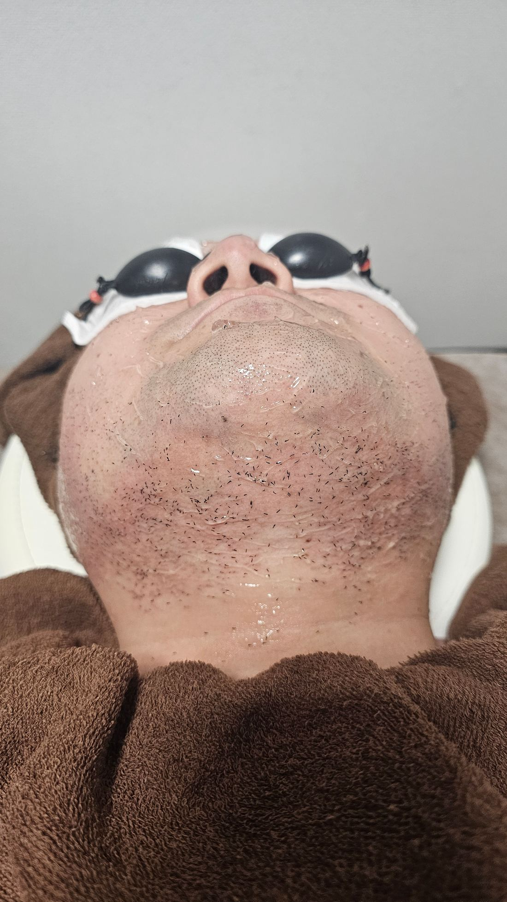

毎日の自己処理、カミソリと電気シェーバーどちらがいい?

サロンに通っている間も、施術と施術の合間には自己処理が必要になる場面があります。「カミソリと電気シェーバー、どちらを使えばいいですか」というご質問をよくいただくので、今回はその違いについてお話しします。
カミソリは肌の表面に刃を直接当てるため深剃りができる一方、肌への摩擦が大きく、カミソリ負けや黒ずみの原因になりやすい処理方法です。電気シェーバーは肌に直接刃が触れにくい構造のため、カミソリに比べて肌への負担を抑えやすいという特徴があります。
自己処理をする際は、乾いた肌に直接刃を当てず、シェービングフォームやジェルを使う、剃った後は保湿するといった基本を守るだけでも、肌トラブルの起こりやすさが変わってきます。毛の流れに逆らわず、同じ場所を何度も剃らないことも肌への負担を減らすポイントです。
効果には個人差がありますが、施術で通う回数を重ねるうちに、自己処理そのものの頻度が減っていきます。それまでの間の自己処理で肌トラブルが気になる方は、カウンセリング時にお使いの道具や処理方法もあわせてご相談ください。